NETLIFY
Importación del tema jekyll-theme-chirpy
He elegido este tema porque resulta visualmente atractivo.
Para volver a importarlo, utilizo la opción Fork. Accedo al repositorio y realizo un fork.
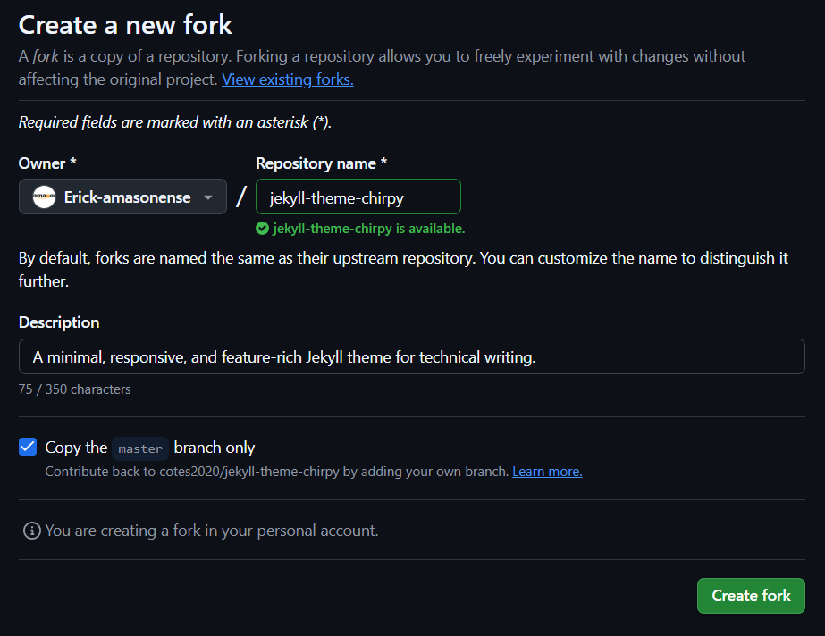
A continuación clono el repositorio en mi máquina local.
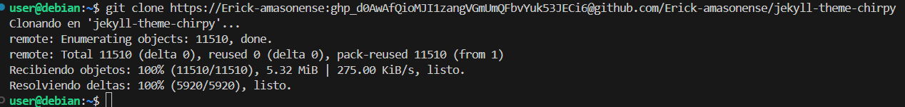
Personalización del sitio
Procedo a configurar el sitio abriendo el archivo _config.yml usando el comando
nano _config.yml
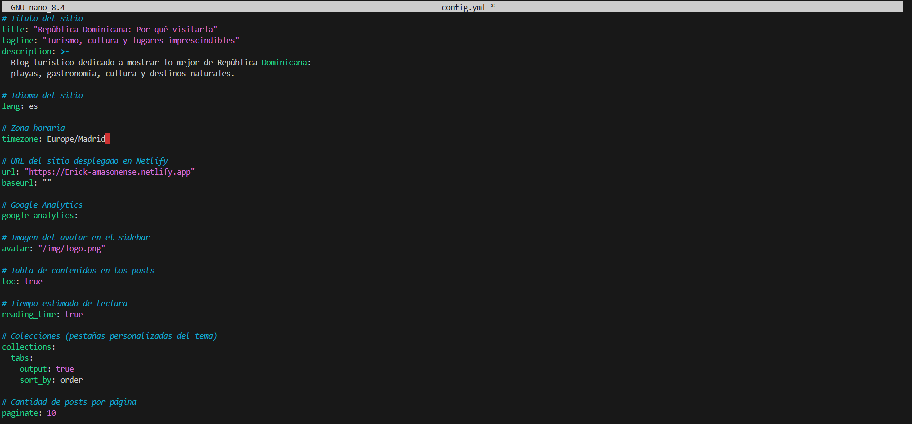
Guardo los cambios.
Personalizo el archivo index.md usando
nano index.md
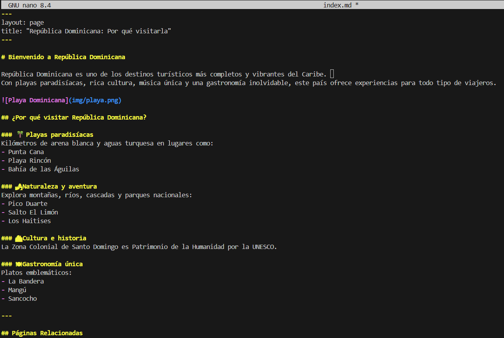
Guardo los cambios.
Creo un nuevo post dentro de la carpeta /_posts con el archivo
nano 2025-12-06-gastronomia-tipica-dominicana.md
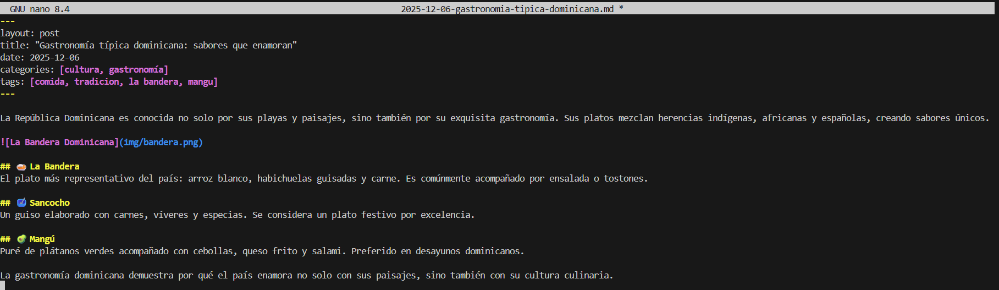
Guardo los cambios.
Creo una página adicional llamada lugares-turisticos.md mediante
nano lugares-turisticos.md
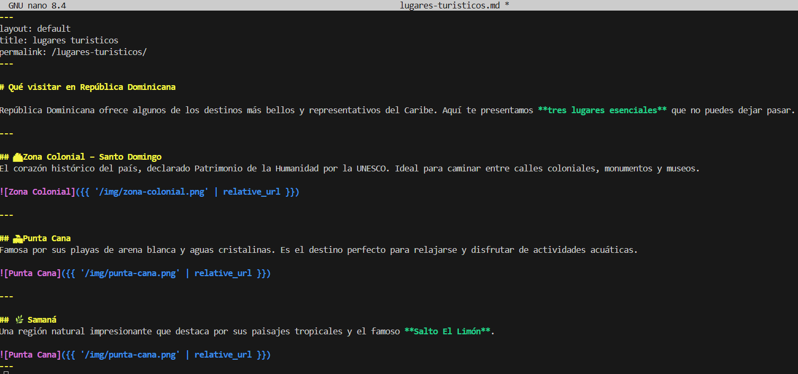
En esta página utilizo rutas relativas para las imágenes, ya que con rutas estáticas surgieron problemas y las imágenes no se mostraban correctamente.
Guardo los cambios.
Regreso a index.md y añado al final el enlace a la nueva página adicional. Los posts se visualizarán mediante el panel de publicaciones recientes en la parte derecha de la página.
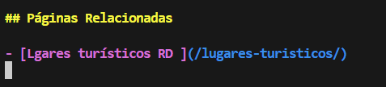
Guardo nuevamente.
Para mayor comodidad, decido subir las imágenes directamente desde GitHub cuando actualice el repositorio.
Actualizo el repositorio remoto ejecutando:
git add .
git commit -m "mensaje"
git push
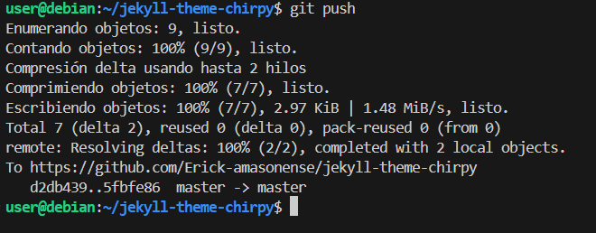
Subo todas las imágenes necesarias.
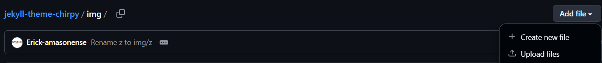
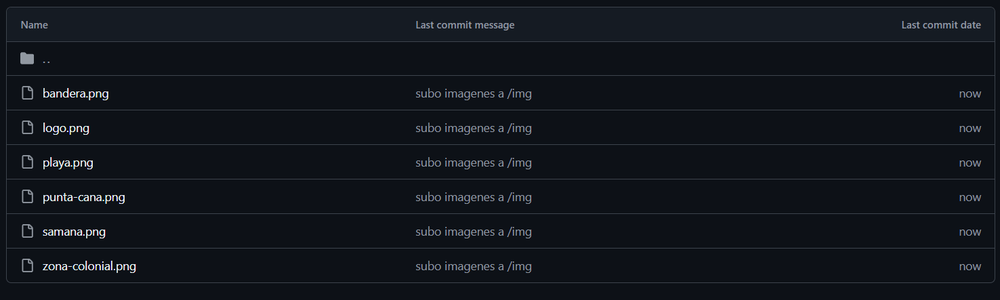
Implementación de Netlify
En Netlify accedo a Projects y selecciono Import from Git.
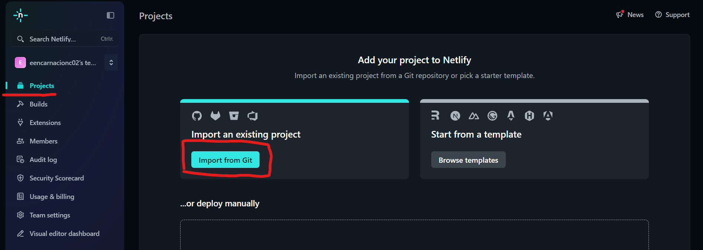
Elijo GitHub.
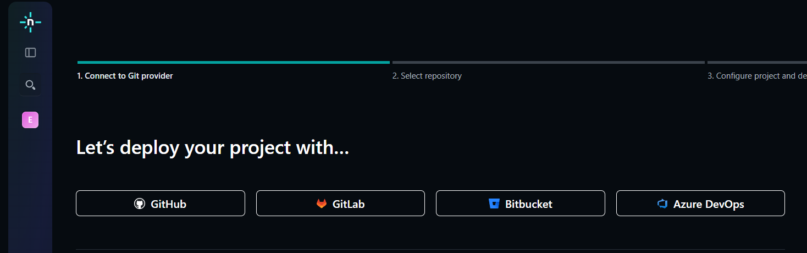
Autorizo el acceso.
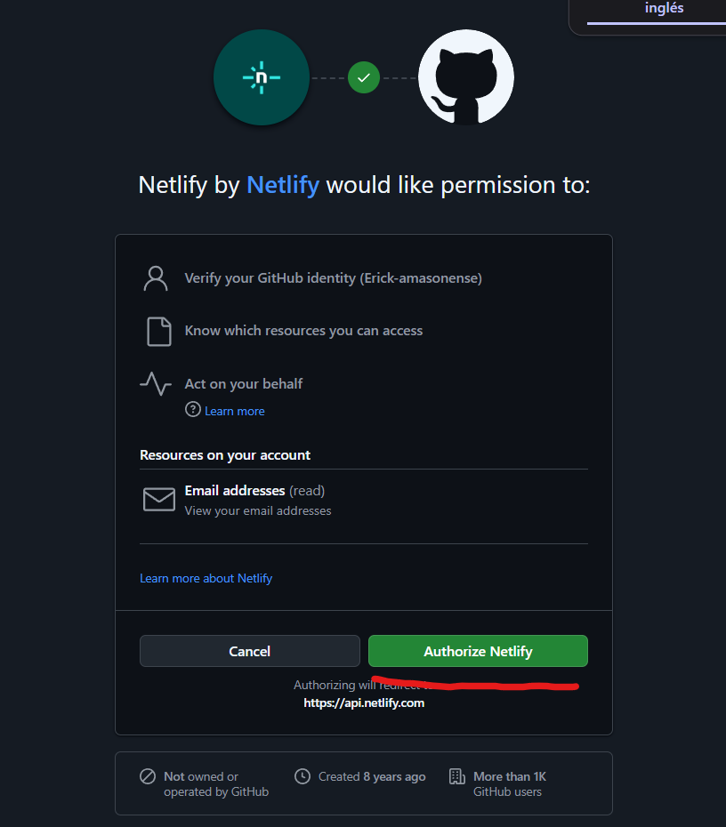
Selecciono Only select repositories y elijo el repositorio correspondiente.
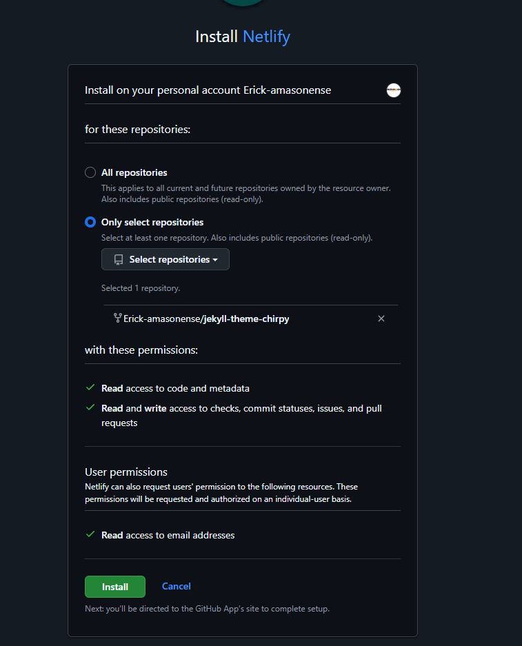
Hago clic sobre el repositorio.
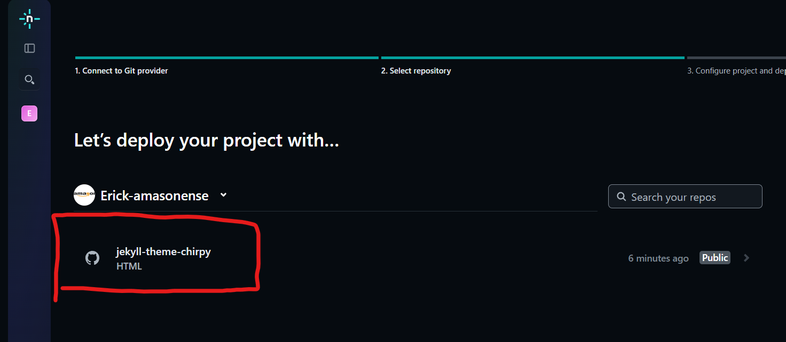
En Project name escribo mi nombre seguido del nombre del sitio y selecciono Deploy.
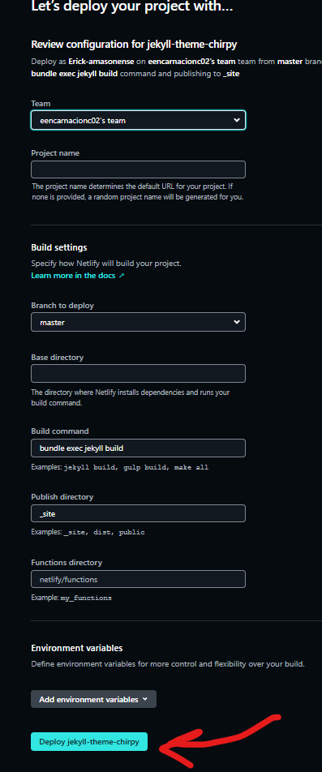
Espero mientras se despliega el proyecto.
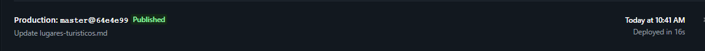
Finalmente, la implementación queda completada.
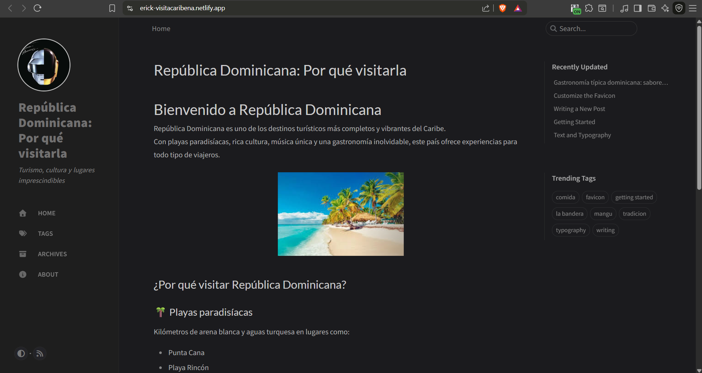